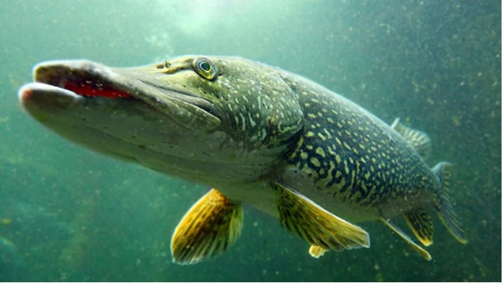

- Okazy
-
Technika wękarska
- wędkarstwo morskie
- wędkarstwo muchowe
- wędkarstwo podlodowe
- wędkarstwo spinningowe
- wędkarstwo spławikowo-gruntowe
- trolling
-
Sprzęt
- kij
- kołowrotek
- podbierak
- żyłka-plecionka
-
Łowiska
- Słup
- Lgiń
- Głębokie
- Odra
-
Humor
- Wędkarz
- Żona wędkarza
- Kochanka wędkarza
- Sąsiad wędkarza
- Teściowa wędkarza
- OFERTA
- PROMOCJA
szczupak

karp

sum
sandacz

tołpyga

Wedkarstwo morskie

Wedkarstwo muchowe

kij
Wędkarz

Żona wędkarza

Kochanka wędkarza

Teściowa wędkarza
2020 ©Henry-Moje Hobby.Motto: Rusz 4-kę idź na RYbY.